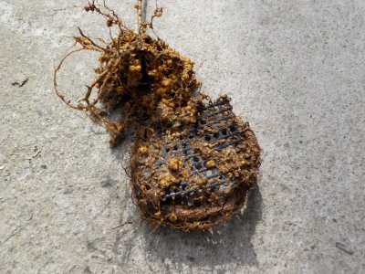
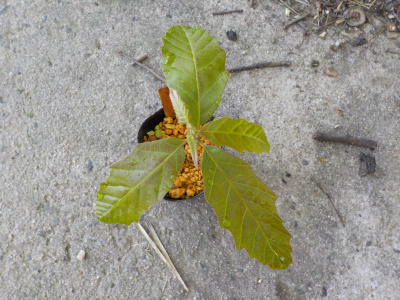

ドングリの根っこが鉢底メッシュを通過していました。
2023/02/26

どんぐりを植え替えしようとしたら、根っこが鉢底ネットを通過して抜けなくなっていました。
無理して引っ張ったら根っこが折れました。
この木は枯れるかも。
2023/02/26

どんぐりを植え替えしようとしたら、根っこが鉢底ネットを通過して抜けなくなっていました。
無理して引っ張ったら根っこが折れました。
この木は枯れるかも。
2022/05/05

以前に山で拾ったどんぐりを3月にまいたら、もうこんなに成長しました。
種子が大きいと出てくる葉っぱも大きいです。
これは丸っこいどんぐりだったのと、葉っぱが太目なので「アベマキ」かな？
SDGsじゃないよ。